Trajectories
A Trajectory maps eased progress t to a value — the shape of an
animation’s output over time. Time lives in TimedAnimation; the
trajectory only knows how to answer value_at(t).
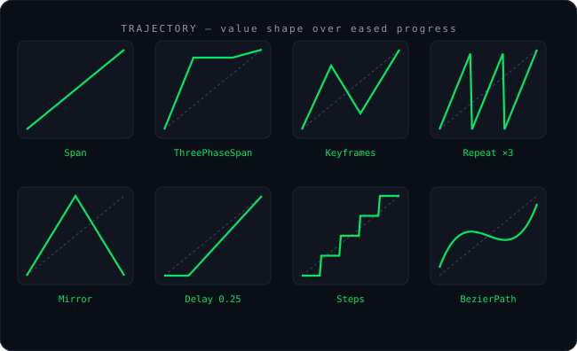
Span<T> — two endpoints

#![allow(unused)]
fn main() {
use smearor_commons_animation::{Span, Trajectory};
use smearor_commons_geometry::{Fraction, Pixels, Vec2};
let span = Span::new(0.0_f64, 100.0);
span.value_at(Fraction::HALF); // 50.0
// any Interpolate type — positions move both axes on one clock
let slide = Span::new(Vec2::<Pixels>::new(0.0, 0.0), Vec2::<Pixels>::new(320.0, 0.0));
}ThreePhaseSpan<T> — out, hold, back
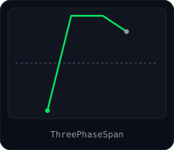
new(from, mid, to, lead, trail): interpolates from → mid over
[0, lead), holds mid over [lead, trail], interpolates mid → to
over the rest.

ThreePhaseSpan<ScaleFactor> with from = to = 1.0 is the
zoom-during-rotation pattern; PulseAnimation is exactly that.
with_easing(lead_ease, trail_ease) shapes the interpolation
inside the lead and trail phases - the boundaries stay real time
fractions while each phase gets its own curve. Without it the outer
TimedAnimation easing warps the phase durations along with
everything else.
with_hold(hold_to, hold_ease) turns the hold into a drifting
phase: instead of sitting at mid it eases mid -> hold_to over
the hold duration - a slow settle or a breathing pause.
with_hold_mode(.., HoldMode::Pulse) mirrors the hold curve
0 -> 1 -> 0: the excursion peaks mid-hold and returns to mid -
an animation around the hold point that hands off cleanly to the
trail phase. Elastic as hold easing turns it into an
oscillation.
Keyframes<T> — the general case
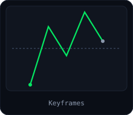
(progress, value) pairs, piecewise-lerped, boundary values holding
outside the range. Span is two keys, ThreePhaseSpan is four —
every other shape is a special case of this one:
#![allow(unused)]
fn main() {
use smearor_commons_animation::{Keyframes, Trajectory};
use smearor_commons_geometry::Fraction;
let keys = Keyframes::new(
(Fraction::ZERO, 0.0_f64),
[(Fraction::new(0.3), 0.8), (Fraction::new(0.6), 0.2), (Fraction::ONE, 1.0)],
);
keys.value_at(Fraction::new(0.45)); // lerps between the two middle keys
}The first key is a separate argument — a Keyframes can never be
empty.
Repeat<S> — the same cycle, n times

Wraps an inner trajectory and plays it count times within the
duration — blinking, pulsing, loading indicators. Easing applies to
the whole sequence, not per cycle:
#![allow(unused)]
fn main() {
use smearor_commons_animation::{Repeat, Span};
let blink = Repeat::new(Span::new(0.0_f64, 1.0), 3); // three cycles
}Mirror<S> — yo-yo
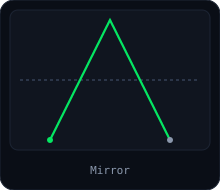
0 → 0.5 plays inner forward, 0.5 → 1 plays it backward —
A → B → A on one clock. Mirror inside Repeat is a seamless
back-and-forth.
Delay<S> — choreography
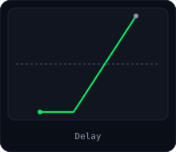
Holds inner’s start value until progress delay, then plays the
inner trajectory compressed into the rest. In a tuple composite this
staggers the members: (Span<RotationRad>, Delay<Span<ScaleFactor>>)
rotates first, zooms after, on one clock.
Eased<S> — a local easing decorator
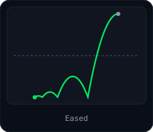
Eased::new(inner, easing) applies an EasingFunction to the
progress inside a trajectory — value_at(t) = inner.value_at(easing(t)). That frees easing from the clock:
TimedAnimation can run Linear while each component of a
composite animation (a tuple, a split axis) keeps its own curve.
#![allow(unused)]
fn main() {
use smearor_commons_animation::{Eased, EasingFunction, Span};
let bounced = Eased::new(Span::new(0.0, 1.0), EasingFunction::Bounce);
}Steps<T> — discrete values

values held in order, 1 / n progress each — no interpolation.
Typewriter reveals, frame animation. For stepping before the
trajectory sees the progress use EasingFunction::Steps instead.
BezierPath<P> — along a curve

The value is the point on the bezier through points at t —
evaluated by recursive de Casteljau. Two points give a line, three a
quadratic, four a cubic. Generic over the point type:
BezierPath<Vec2<Pixels>> animates along screen curves,
BezierPath<Vec3> sweeps a spatial path — any Interpolate point
works.
#![allow(unused)]
fn main() {
use smearor_commons_animation::{BezierPath, Trajectory};
use smearor_commons_geometry::{Fraction, Vec3};
let swoop = BezierPath::new(
Vec3::<()>::new(0.0, 0.0, 0.0),
[Vec3::new(1.0, 2.0, 1.0), Vec3::new(2.0, 0.0, 0.5)],
);
swoop.value_at(Fraction::HALF);
}Orbit<U> — circular laps
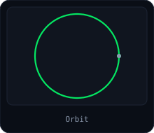
Orbit::new(center, radius) moves the value on a circle —
spinners, loading wheels. One lap by default; with_turns(n) runs
n revolutions per animation. Integer turns closes the curve, so
value_at(0) == value_at(1) — a seamless loop under
EasingFunction::Linear. Pair with Mirror for a partial swing.
#![allow(unused)]
fn main() {
use smearor_commons_animation::{Orbit, Trajectory};
use smearor_commons_geometry::{Fraction, Vec2};
let wheel = Orbit::new(Vec2::<()>::new(0.5, 0.5), 0.3).with_turns(2.0);
wheel.value_at(Fraction::new(0.25)); // south after half a lap
}Helix<U> — circular climb

Helix::new(center, radius, z_from, z_to) is the spatial cousin of
Orbit: the value winds around center while z interpolates
linearly — corkscrews, ascending paths. with_turns(n) adds
windings.
#![allow(unused)]
fn main() {
use smearor_commons_animation::{Helix, Trajectory};
use smearor_commons_geometry::{Fraction, Vec2};
let corkscrew = Helix::new(Vec2::<()>::new(0.0, 0.0), 0.5, 0.0, 1.0);
corkscrew.value_at(Fraction::HALF); // opposite point at z = 0.5
}Lissajous<U> — sinusoidal ratio figures

Lissajous::new(center, size, x_turns, y_turns) oscillates both
axes sinusoidally — 2:1 draws a figure eight, 3:2 a bow tie.
with_phase shifts the x wave and changes the handedness.
Integer ratios close the loop.
#![allow(unused)]
fn main() {
use smearor_commons_animation::{Lissajous, Trajectory};
use smearor_commons_geometry::Vec2;
use std::f64::consts::FRAC_PI_2;
let eight = Lissajous::new(Vec2::<()>::new(0.5, 0.5), 0.4, 2.0, 1.0)
.with_phase(FRAC_PI_2); // circle -> eight -> line
}Spiral<U> — winding out

Spiral::new(center, radius) circles the center while the radius
grows linearly from 0 to radius — with_turns sets the
windings.
PolygonPath<P> — edges in equal time
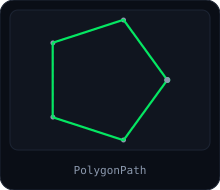
PolygonPath::new(vertices) travels a closed polygon — every
edge gets the same time share, corners stay corners. Generic like
BezierPath: PolygonPath<Vec3> walks a spatial polygon.
CatmullRom<P> — through every point
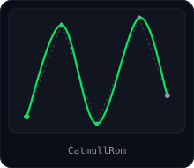
CatmullRom::new(points) draws the smooth spline that passes
through all its control points — unlike a bezier, every knob
lies on the curve. Same generic point type.
Lemniskate<U> — the canonical eight
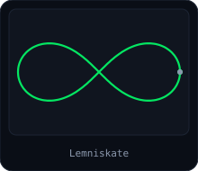
Lemniskate::new(center, size) traces the Bernoulli lemniscate —
the classic infinity shape, smooth through its crossing.
SphericalOrbit<U> — a tilted lap

SphericalOrbit::new(center, radius, inclination) is Orbit with
the plane tilted by inclination radians — 0 is flat,
FRAC_PI_2 a vertical wheel swinging through z.
TorusKnot<U> — winding a torus
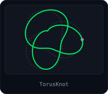
TorusKnot::new(center, radius, p, q) traces the (p,q) torus
knot — p winds around the axis, q threads the hole. Prime
pairs draw the interlaced classics, e.g. (2, 3) the trefoil.
Figure8<U> — an eight with depth
Figure8::new(center, size, depth) draws a Gerono lemniscate in
the x/y plane that also swings depth units along z — an
infinity loop diving forward.
Ellipse<U> — the oval lap

Ellipse::new(center, rx, ry) widens Orbit to independent
semi-axes; with_rotation tilts the axes, with_turns counts
laps.
Rose<U> — the rosette
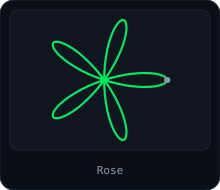
Rose::new(center, size, petals) traces r = size·cos(k·θ) —
petals = 3 the trefoil rose, 4 an eight-leaf rosette.
with_phase rotates the figure.
Spiro<U> — the spirograph
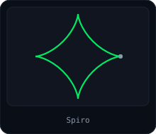
Spiro::new(center, outer, inner, pen) rolls a wheel inner
inside outer while a pen pen units out draws stars and
blossoms - outer = 4·inner with pen = inner gives the
four-cusped astroid.
Superellipse<U> — exponent morphing

Superellipse::new(center, rx, ry, exponent) morphs with n:
2 is the ellipse, 2/3 the astroid, large n a squircle.
StarPath<P> — the star polygon
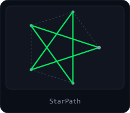
StarPath::new(vertices).with_step(k) is PolygonPath skipping
k vertices per edge - five points, step = 2: the pentagram.
WaveTrail<U> — travel with wobble

WaveTrail::new(from, to, amplitude, waves) moves from -> to
swaying perpendicular — a slalom across the field.
BouncePath<U> — hops that decay

BouncePath::new(from, to, height, hops, decay) hops parabolas
along the route, each decay smaller than the last.
ConicalHelix<U> — the tapering staircase

ConicalHelix::new(center, r_from, r_to, z_from, z_to) is Helix
with the radius growing or shrinking while it climbs — a spiral
staircase flaring into a cone.
Viviani<U> — a figure eight on a sphere

Viviani::new(center, radius) traces the intersection of sphere
and off-center cylinder — a closed lemniscate in space.
Mobius<U> — the one-sided edge
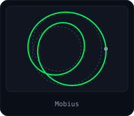
Mobius::new(center, radius, width) walks the single edge of a
Moebius strip — two ring revolutions to return, half a run flips
sides.
SphereLissajous<U> — weaving a ball

SphereLissajous::new(center, radius, lon, lat) oscillates
longitude and latitude in frequency ratio — woven basket coverage
of a sphere, closed for integer ratios.
Lorenz<U> — the strange attractor
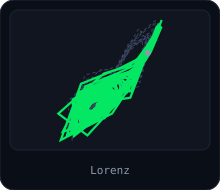
Lorenz::new(center, size) integrates the classic chaotic system
at construction and walks the baked path — the butterfly. It does
not close; Mirror makes it loop-friendly.
Tuples — composite values on one clock
(A, B) implements Trajectory when both members do — a
rotate-while-zooming animation needs no dedicated struct:
#![allow(unused)]
fn main() {
use smearor_commons_animation::{Span, ThreePhaseSpan};
use smearor_commons_geometry::{RotationRad, ScaleFactor};
let trajectory = (
Span::new(RotationRad::ZERO, RotationRad::QUARTER_TURN),
ThreePhaseSpan::new(
ScaleFactor::new(1.0), ScaleFactor::new(0.85), ScaleFactor::new(1.0),
Fraction::new(0.3), Fraction::new(0.7),
),
);
// TimedAnimation<…>::value_at(t) → (RotationRad, ScaleFactor)
}Box<dyn Trajectory<Value = V>> implements Trajectory too — a UI
can let the user pick the shape at runtime and run it on the same
clock.
Ready-made aliases
| Alias | Type | For |
|---|---|---|
RotationAnimation | TimedAnimation<Span<RotationRad>> | tile/pose rotation |
ZoomAnimation | TimedAnimation<Span<ScaleFactor>> | plain zoom |
PulseAnimation | TimedAnimation<ThreePhaseSpan<ScaleFactor>> | out-hold-back |
Vec2Animation<U> | TimedAnimation<Span<Vec2<U>>> | position/size |
RotationZoomAnimation | TimedAnimation<(Span<RotationRad>, ThreePhaseSpan<ScaleFactor>)> | the rotate gesture’s full effect |
Fraction::clamped inside ThreePhaseSpan::new keeps
lead ≤ trail — phase order can not be inverted by accident.
Playground
cargo run -p smearor-commons-animation --features gtk4 --example playground
opens a GTK window that combines any trajectory with any easing —
parameters (overshoot, elastic amplitude/period, steps, bezier
control points, repeat count, delay) are sliders, and the easing
curve is drawn behind the animated value.